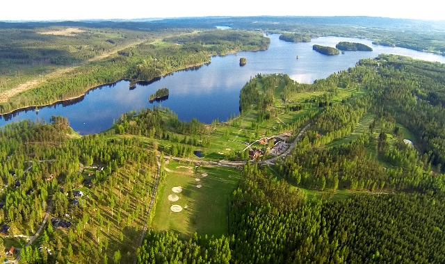

Een van de mooiste golfbanen van Zweden ligt op slechts 5 minuten lopen van Casa Hagge — al jaren in de top-10.
Op slechts 5 minuten lopen van Casa Hagge ligt midden in de natuur een 18-hole golfbaan die al jaren in de top-10 mooiste golfbanen van Zweden staat. Een uitzonderlijke baan die voor een groot deel langs het meer loopt en gedeeltelijk de bossen in gaat — zeer gevarieerd en uitdagend om te spelen.
Voor de minder ervaren golfers is er ook een driving range waar zowel in de open lucht als overdekt de swing geoefend kan worden. Naast golf zijn er ook 2 padelbanen die via de golfclub afgehuurd kunnen worden.
Of u nu een doorgewinterde golfer bent of het spel voor het eerst wil proberen op de driving range — dit is een prachtige mogelijkheid op loopafstand van het huisje.

Een van de mooiste banen van Zweden, al jaren in de nationale top-10. Langs het meer, door de bossen — gevarieerd en uitdagend voor elk niveau.
Oefen uw swing in de open lucht of overdekt. Ideaal voor beginners die het spel willen ontdekken of gevorderden die willen opwarmen.
Via de golfclub zijn er ook twee padelbanen te reserveren. Padeltennis — een van de snelst groeiende sporten van Europa — in een prachtige Zweedse setting.
De baan ligt letterlijk midden in de natuur, omgeven door bossen en het meer. Golfen hier is een beleving op zich — ongeacht uw score.
Slechts 5 minuten lopen vanaf de voordeur van Casa Hagge. U hoeft niet eens de auto te pakken voor een ronde golf.
De baan staat al jarenlang in de top-10 mooiste golfbanen van Zweden — een bijzondere combinatie van uitdaging, schoonheid en rust.
Boek Casa Hagge en geniet van een van de mooiste golfbanen van Zweden direct voor de deur.
Boek nu